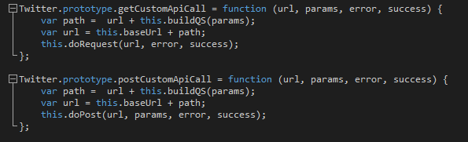
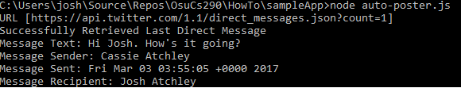

Here is an example of what I was saying earlier about functionality that exists in the Twitter API but not in the library we're using. The bottom URL of each block is the REST call path, and the middle line of each block is the REST call with some example parameters. There is more extensive documentation for these (and all the other REST calls) in the Twitter REST API documenation. So how do we access these REST calls if our library doesn't have a method that matches up with them? That's where the library's custom GET and POST methods come in to play. Here they are again for reference: 
Here is the first function we can write to make some custom functionality, combining what we know is possible from the Twitter API documentation and from our Twitter JS Client library. Let's go through this like Johnny Cash: one piece at a time.
Line 15 defines our generic error callback, which is basically just a function that tells us if something went wrong and then prints out an error message to the console. You can make more customized error callbacks for individual
functions if you want, which is what I tended to do for my success callbacks when making this guide.
Line 20 is where the fun begins. Line 21 defines the URL for the REST call, which we know from the Twitter API documentation. We don't need the whole URL because we know from investigating how the
twitter.getCustomApiCall() works that it prepends the information to access Twitter and handles parsing out the query parameters for us. All we need to do is give it the path for the REST call and whatever custom parameters
we care about. In this case, we only want the most recent message, so we set the count parameter to 1.
On Line 24 we construct our function with our URL, parameters, and callbacks. In the success callback (the function(data) {...} piece of this), we parse out the returned JSON and log some of the fields to the console.
The result should look something like this:

Awww, what a nice message from my sister. It's a nice message, but what can we do if we want to see the most recent message from a different person? Right now all we can do is look at the most recent message in our inbox. Let's find out how in the next section.
We're going to weave together multiple pieces of the Twitter API and the library we're using to make a more complicated piece of functionality.
Previous Next